Along with Color QuickDraw came the need for applications to support printing of
pixMaps. Users need (and expect) to be able to produce realistic hard copies of their
color screen displays. The challenge for developers is to ensure high-quality output
regardless of the printing configuration being used. This article and its accompanying
sample programs show you how.
Consider a 24-bit color image we've just scanned in. We'd like this image to print in
color on all color printers, whether they're color LaserWriters, ImageWriters with
color ribbons, or color ink jet printers. Similarly, we'd like to generate output that
represents the source image as closely as possible when we're using grayscale
printers such as the LaserWriter IIg with PhotoGrade, or monochrome printers such
as LaserWriters without PhotoGrade, StyleWriters, and ImageWriters with black
ribbons. And, of course, we'd like our images to look great even when the user has
chosen black-and- white printing on a color-capable printer.
The challenge of producing high-quality output regardless of the printing
configuration should ideally be handled at the driver level, through new printer
drivers or solutions such as ColorSync or QuickDraw GX. But until every system
makes use of these new technologies, we're stuck with the task of working around the
pitfalls of the present printing architecture. The key is to determine the printing
configuration we're working with and then supply the routine that ensures the
highest- quality output in that particular case.
This article and the sample code that accompanies it on theDeveloper CD Seriesdisc
will show you how to print pixMaps (or pictures containing pixMaps) faithfully on
any printer by building in a combination of approaches to cover all cases. The results
will be far better than any you can get by a "one size fits all" approach. I'll discuss
how to make use of Color QuickDraw when a printer driver can support it, how to
render color images with original QuickDraw on printers whose drivers don't support
Color QuickDraw (such as the ImageWriter), and how to convert color images to high-
resolution halftone images for printing on monochrome printers.
The methods in this article apply equally well to PostScript and QuickDraw printers,
and they work correctly whether or not the new printing solutions are in place. Note,
however, that without some extra work (see the end of this article) these methods may
not be optimal for printing pictures that contain text. When text is converted to
pixMaps, all of the font information is lost, and the result can often be chunky,
poor-quality text that's hard to read.
All of the techniques described here require you to have 32-Bit QuickDraw available.
This covers any Macintosh with 32-Bit QuickDraw in ROM and any machine with Color
QuickDraw in ROM that either is running System 7 or has the 32-Bit QuickDraw INIT
installed. If you have only ColorQuickDraw available (the version that predates
32-Bit QuickDraw), you can still use all of the techniques described here as long as
you implement a GWorld structure and replacements for the calls OpenCPicture,
NewGWorld, DisposeGWorld, and CopyBits with ditherCopy mode. Methods to apply
when Color QuickDraw is not available are discussed in "Making the Most of Color on
1- Bit Devices" indevelopIssue 9. Together, the present article and the article in Issue
9 give you solutions that cover printing in any situation.
Many applications today that deal with pixMap images don't worry about addressing all
the possible variations in printing configurations. This is unfortunate because the "one
size fits all" approach can severely limit an application's potential.
Under the current printing architecture, if you provide just one printing method in
your application based on assumptions about the printing configuration most likely to
be used, you're bound to frustrate and annoy some users. For example, imagine a user
with a color laser printer who for some special purpose wants to print a color image
in black and white. If your application has failed to take this printing possibility into
account, the user will end up with a hideous Black Blob that looks nothing like the
original. Or picture a user with an ImageWriter who decides to invest in a color
ribbon so that she can print color images with her favorite paint program, only to
discover that because the program doesn't provide for this possibility, the result is --
you guessed it -- a hideous Black Blob. Or consider the users who find that documents
containing color images that print just fine on their LaserWriters at work, print
terribly on their StyleWriters, ImageWriters, or Personal LaserWriters at home.
These frustrated users will end up clogging your customer service hotline with the
kind of calls you don't want to get. The moral of the story is that under the current
printing architecture it's not enough to provide just one method to print your images.
Far superior to the "one size fits all" approach is the strategy of providing printing
routines to address the whole range of printing configurations your application might
encounter. Then all your application has to do at print time is to determine which
printing configuration it's dealing with and provide the appropriate printing routine.
That's what this article is about.
We start by looking over the possible printing configurations; then we consider
routines to address each of these configurations; and finally, we look at how an
application can determine which printing configuration it's facing.
When you're printing from the Macintosh, there are three distinct types of printer
drivers that you might encounter:
Note that what matters to you isn't the printer being used, but the printer driver.
Thus, for example, if you print Color QuickDraw to a LaserWriter IINT using the
version 5.2 driver (which doesn't have the Color/Grayscale option), you'll end up
with nothing but stark black shapes because there's no Color QuickDraw support in the
driver. The same printer using the 7.0 driver with the Color/Grayscale option
selected will produce excellent results in response to the very same drawingcommands
-- same printer, but totally different results depending on the driver. Another good
example is the ImageWriter. Versions of the ImageWriter driver through version 7.0
don't support Color QuickDraw calls, but there are third-party drivers for the
ImageWriter that do.
Note also that in the category of drivers that support Color QuickDraw calls, no
distinction needs to be made between grayscale and color printers. Based on your
experience with Color QuickDraw on the screen, you might have the impression that a
color image should be converted to a grayscale image before printing to a noncolor
device, or that you need to get the printer port's color table, GDevice, or bit depth, and
map your images to those before printing. But in fact, this is not only unnecessary but
also undesirable in the printing environment. If the driver supports Color QuickDraw,
you don't need to worry about whether your images will be printing on a color or a
grayscale printer.
ABOUT PRINTER DRIVER PORTS AND COLOR QUICKDRAW SUPPORT
While I've categorized printer drivers by whether or not they support Color
QuickDraw, what we're really concerned with is whether they give us a cGrafPort or a
grafPort to draw in. The port I'm referring to here is the TPPrPort that the driver
returns to the application through PrOpenDoc. Printer drivers that give us a
cGrafPort support Color QuickDraw calls, because a cGrafPort is capable of handling
multibit pixels. On the other hand, printer drivers that give us a grafPort don't
support Color QuickDraw calls.
Drawing with Color QuickDraw in a grafPort, while possible, will yield disappointing
results. Consider what happens if you try to CopyBits a 24-bit-deep image to the
ImageWriter (assuming you're not using ditherCopy mode in System 7). Since you're
copying to a driver port that's capable of only two colors, every one of the pixels in
your image will become either your foreground color or your background color,
whichever its value is closest to. In the usual case of a black foreground and a white
background, you'll end up with the Black Blob effect -- all colors with luminance
values of at least 50% black draw black and everything else draws white.
Although the situation is improving, at present most of the drivers that Apple ships
return grafPorts. (See "The Story Behind Color QuickDraw Support" for the whys
and wherefores.) The LaserWriter drivers version 6.0 and later are capable of
providing a cGrafPort for your application to draw into, but note that if the user
selects Black & White mode in the color LaserWriter driver's print job dialog, even
that driver returns a grafPort; a cGrafPort is returned only when the user has chosen
Color/Grayscale mode.
Let me warn you up front that the printer driver port isn't necessarily a true
cGrafPort or grafPort -- that is, one that's valid outside the context of the Printing
Manager. In the case of Apple's printer drivers, it never is. The fact is that drivers
have a lot of leeway when it comes to the port structure they return. Since the driver
needs to replace the port's QuickDraw bottleneck procedures in order to direct the data
to a printer, there's no need for many of the fields that you would use if you were
drawing to a true grafPort or cGrafPort, such as a window on the screen. In fact, when
you make a call like
CopyBits(&bitMap, &printPort->gPort.portBits, &srcRect,
&destRect, srcCopy, nil);
the data most likely won't even end up in the driver port's bitmap. In fact, the bitmap
structure may not even exist. There's no need for it to. All that matters is that as you
draw into the grafPort or cGrafPort, your drawing commands are intercepted,
possibly translated, and then redirected to the printer.
So don't assume that the printer driver's port is a true grafPort or cGrafPort, or that
the values therein have anything to do with how your image will print. You should view
the printer driver's port as a private structure, with the only public fields being the
actual pointer to the grafPort or cGrafPort (your TPPrPort pointer) and its port's
portBits bitmap. Even then, SetPort and CopyBits are the only calls you should pass
those values to.
THE PROBLEM AT HAND
To get back to the problem at hand, we need printing routines to address each of the
three possible printing configurations. The rest of this article is devoted to describing
those routines and outlining how to determine at print time which routine is
appropriate. The routines are demonstrated by four samples in the Adventures in Color
Printing folder on theDeveloper CD Seriesdisc.
Note that all the samples implement the technique of loading and storing print records
from job to job. All printing applications should implement some sort of handling like
this so that when users attempt to print documents, their last used settings are
available, rather than the driver's defaults.
All samples work under System 6 or 7. Remember that to use the methods described
here, you must have 32-Bit QuickDraw available, or if you have only Color
QuickDraw (the version that predates 32-Bit QuickDraw) available, you must
implement a GWorld structure (which is the same thing as a cGrafPort) and
replacements for the calls OpenCPicture, NewGWorld, DisposeGWorld, and CopyBits
with ditherCopy mode.
The easiest color printing situation you'll come across occurs when a printer driver
gives you a cGrafPort to work in. To generate the best results we first need to deal with
setting the resolution and scaling the image. Then we want to band our image through a
32-bit-deep GWorld to avoid the potential problem of operator incompatibility. The
Color Adventures sample code demonstrates how we go about this. As mentioned
earlier, grayscale printing in a cGrafPort shouldn't be treated any differently from
color printing in a cGrafPort.
SETTING RESOLUTION AND SCALING THE IMAGE
When we print an image, a couple of different scaling operations are involved. First,
our application sets the printer driver port's resolution and, if necessary, scales the
image to that resolution; then the printer driver scales the image to the device's
physical (output) resolution during printing. The amount an image is scaled when
copied to the printer port is calculated as follows:
scaleAmt = (sourceDPI / destinationDPI) * (scaling factor from Page Setup dialog)
To achieve the highest-quality output, our image's resolution should ideally be the
same as the printer's physical resolution. If our image's resolution doesn't match the
printer's resolution, we can scale the image before printing, change the port's
resolution to match the image resolution, or do a combination of both (scale the source
image and the port).
Here's how we proceed: First, we need to know the resolution of our source image. Most
PICT files on the Macintosh are rendered at 72 dpi, but that needn't be the case, and in
the case of scanned images is actually rather unlikely. The GetImageRes routine in the
Color Adventures sample shows how to find the resolution of any PICT. If the
OpenCPicture call was used to create the picture, the resolution information is stored
right in the picture header for easy retrieval. Otherwise, we need to determine the
resolution by parsing the picture.
Once we have the image resolution, we need to know how close the printer can be set to
that resolution. We can determine the supported resolutions for a particular printer
using PrGeneral, as discussed in the article "Meet PrGeneral" indevelopIssue 3 and
inInside MacintoshVolume V. As noted in those sources, when we call PrGeneral with
the GetRslData opcode, drivers that support PrGeneral will return a list of discrete
resolutions and possibly a range of supported resolutions that we can also specify.
So, for example, if PrGeneral told us that we were capable of printing our 300-dpi
image at 300 dpi, we would set the printer port's resolution to 300 dpi x 300 dpi by
using PrGeneral with the setRsl opcode. Then all we'd need to do would be to draw the
image at its original size. That's the easy case.
If we're printing to a device none of whose supported resolutions match our image's
resolution, the best choice is usually the pair of horizontal and vertical resolutions
that when multiplied yield thelargest product. We'll need to scale the image to that
resolution before printing. While this method of choosing resolutions isn't foolproof,
it should typically give us the best results. Of course, if someone comes out with a
driver for a printer that supports a resolution pair such as 600 dpi x 72 dpi, where
there's a big difference between the horizontal and the vertical resolution, there might
be problems with such an approach. Many times, we'll want the horizontal and vertical
resolutions to be equal. The section on setting resolution under "Printing in Black and
White" later in this article discusses this further.
We'll probably also want to put a ceiling on the resolution of the printer port.
Otherwise, if we're printing to a Linotronic we may have to scale our 72-dpi images
up about 3528 percent to 2540 dpi, and that will take a long, long, long time to print
and require an enormous amount of memory. Of course there may be times when 2540
dpi is exactly what we want. We can always provide the user with a list of supported
output resolutions to choose from.
Finally, suppose that we can't set the printer resolution because we're using a driver
that doesn't support PrGeneral. We can tell this because after our call to PrGeneral,
ResError is set to resNotFoundErr. In this case, we have only one recourse -- to scale
the image to the port's default resolution, 72 dpi.
Putting all this together, we end up with the GetBestDPI routine in the Final Adventure
sample for setting the best resolution with PrGeneral. GetBestDPI obtains the best
horizontal and vertical resolutions to use for printing with the selected driver. The
function looks like this:
void GetBestDPI(short *pxDPI, short *pyDPI, short xDPI_ceiling,
short yDPI_ceiling, Boolean wantSquareDPI);
The caller places an ideal resolution pair (what the caller really wants to use) in the
parameters pxDPI and pyDPI. This is also where the routine returns the resolutions it
decides on. In xDPI_ceiling and yDPI_ceiling, the caller places the maximum
resolution desired in either direction. For example, if you didn't want values larger
than 300 dpi returned, you'd put 300 in both of these parameters. If wantSquareDPI
is true, only square resolutions (those with equal horizontal and vertical components)
will be considered.
The printer driver is expected to be closed upon entry to this routine and is therefore
opened and closed around the PrGeneral code. If PrGeneral isn't supported by this
driver, or if an error occurs, the routine returns 72 x 72 dpi, which is the default
for Macintosh printer drivers. If the ideal resolution the caller passes in is available,
we choose that, ignoring wantSquareDPI, xDPI_ceiling, and yDPI_ceiling. We figure
that the calling routine knows more about the ideal resolution it requests than we do.
Here's the code:
void GetBestDPI(short *pxDPI, short *pyDPI, short xDPI_ceiling,
short yDPI_ceiling, Boolean wantSquareDPI)
{
TGetRslBlk getResRec;
Boolean exactMatch = false;
short bestResX, bestResY, xDPI, yDPI,
desiredResX, desiredResY, rec;
// Open the driver for our PrGeneral call. Assume we'll return
// 72 x 72 dpi until we find otherwise, and also store the desired
// resolution that the caller passed to us through the pxDPI and
// pyDPI parameters.
PrOpen();
bestResX = bestResY = 72;
desiredResX = *pxDPI;
desiredResY = *pyDPI;
if (!PrError())
{
// Ask PrGeneral for the resolution records for this driver.
getResRec.iOpCode = getRslDataOp;
PrGeneral((Ptr) &getResRec);
if ((!ResError()) && (!getResRec.iError))
{
// First check for the exact resolution pair that the caller
// requested. To begin with, check the range of resolutions
// supported to see if the pair is within that.
if ((getResRec.xRslRg.iMin <= desiredResX) &&
(getResRec.xRslRg.iMax >= desiredResX) &&
(getResRec.yRslRg.iMin <= desiredResY) &&
(getResRec.yRslRg.iMax >= desiredResY))
exactMatch = true;
// If we didn't find an exact match, check the driver's discrete
// resolutions to see if we have one there.
for (rec = 0;
(!exactMatch) && (rec < getResRec.iRslRecCnt);
rec++)
if ((getResRec.rgRslRec[rec].iXRsl == desiredResX) &&
(getResRec.rgRslRec[rec].iYRsl == desiredResY))
exactMatch = true;
// If we found an exact match, use it. Otherwise, loop through each
// resolution record and find the one that best matches our
// criteria.
if (exactMatch)
{
bestResX = desiredResX;
bestResY = desiredResY;
}
else
for (rec = 0; (rec < getResRec.iRslRecCnt); rec++)
{
xDPI = getResRec.rgRslRec[rec].iXRsl;
yDPI = getResRec.rgRslRec[rec].iYRsl;
if ((xDPI <= xDPI_ceiling) &&
(yDPI <= yDPI_ceiling) &&
(!wantSquareDPI || (xDPI == yDPI)) &&
((xDPI * yDPI) > (bestResX * bestResY)))
{
bestResX = xDPI;
bestResY = yDPI;
}
}
}
}
// Return the best resolution pair we found and close the driver.
*pxDPI = bestResX;
*pyDPI = bestResY;
PrClose();
}
The following code returns a rectangle to use when scaling from an image's bounds
(srcRect) and resolution (ixDPI, iyDPI) to a printer port's resolution (pxDPI,
pyDPI). The resulting rectangle (scaleRect) will have a top left corner of (0, 0).
void GetScaleRect(Rect *srcRect, short ixDPI, short iyDPI,
short pxDPI, short pyDPI, Rect *scaleRect)
{
Fixed scale;
*scaleRect = *srcRect;
OffsetRect(scaleRect, -scaleRect->left, -scaleRect->top);
scale = FixRatio(pxDPI, ixDPI);
scaleRect->right =
FixMul(scale, (long) scaleRect->right <<16) >>16;
scale = FixRatio(pyDPI, iyDPI);
scaleRect->bottom =
FixMul(scale, (long) scaleRect->bottom <<16) >>16;
}
BANDING THE IMAGE THROUGH A GWORLD
Pictures can include information that a printer driver can't understand, such as
transfer modes and structures that have been added to the system since the driver was
developed, and sometimes a driver can't reproduce certain operations that work great
on the screen. For example, PostScript doesn't understand the concept of transfer
modes, so the LaserWriter driver doesn't know what to do when it encounters such
modes as blend, ditherCopy, and addMin. Aside from transfer modes, certain
QuickDraw operations aren't supported by all drivers. For instance, CopyMask doesn't
work with any of Apple's printer drivers as of this writing.
The upshot is that if you only use DrawPicture, some pictures are bound to print
incorrectly on various printers because of operator incompatibility. The PICT named
Incompatibility Test in the sample code folder demonstrates this problem. Try
printing the picture with TeachText and comparing the output to the screen image. A
safer approach to printing an image (although one that may require more data to be
sent to the printer and thus result in slower printing) is to always send 32-bit-deep
data to the printer by banding the image through a GWorld. Of course, if you know your
application never needs 32-bit pixMaps, you can just use a GWorld deep enough for
the data you'll be printing.
Here's how it works: Create a 32-bit-deep GWorld that has room for one horizontal
(or vertical) strip of data of some arbitrary size. In the following example, we use
horizontal strips. Call SetGWorld on this GWorld and then DrawPicture, passing the
full image's picFrame. All of the picture outside the banding GWorld's bounds rectangle
is clipped. The code might look like this:
#define BAND_HEIGHT 144 // 2 inches at 72 dpi.
pictRect = (*imgPICT)->picFrame;
bandRect = pictRect;
bandRect.top = 0;
bandRect.bottom = BAND_HEIGHT;
err = NewGWorld(&bandGWorld, 32, &bandRect, nil, nil, 0);
if (err == noErr)
{
SetGWorld(bandGWorld, nil);
destPix = GetGWorldPixMap(bandGWorld);
LockPixels(destPix);
DrawPicture(imgPICT, &pictRect);
UnlockPixels(destPix);
}
This results in a band of the original picture being drawn to bandGWorld, which in
turn can be copied to the printer port, like so:
SetPort(&(printPort->gPort));
srcPix = GetGWorldPixMap(bandGWorld);
LockPixels(srcPix);
CopyBits((BitMap *) *srcPix, &(printPort->gPort.portBits), &bandRect,
&bandRect, srcCopy, nil);
UnlockPixels(srcPix);
To create the next band, shift bandGWorld's bounds rectangle down by one bandwidth
and repeat the process. For best results, you may want to increase the printer port's
resolution with PrGeneral, draw into a GWorld of the same resolution, and then use
CopyBits to draw that in the printer port.
When you're working with 32-bit images, it's very useful to implement some sort of
banding or picture spooling algorithm, since 32-bit images take up an enormous
amount of memory, especially when you need to scale them to higher printer
resolutions. All of the program samples on the CD have routines that implement
banding and spooling. These routines also handle the special problems introduced when
you need to dither and scale during banding.
When you send 32-bit-deep data to the printer driver, you inadvertently solve
another problem as well -- worrying about the printer's output characteristics.
Printing images as 32-bit deep will give you the best output on all color printers
whose drivers return a cGrafPort. You can be sure that when you send 32-bit-deep
data the driver and printer will do the right thing -- either print the image 32 bits
deep or map it to the device's characteristics, be it an 8-bit device or whatever. You
don't need to worry about checking the depth of the printer port or getting its GDevice
or color table, which would be futile anyway since the port probably isn't a true
cGrafPort.
In general, if you don't know whether an image is 32 bits deep or 8 bits deep, you
should print it at 32 bits. This way, you won't lose any color information. Of course,
printing 32-bit-deep images means increased printer data and print times, so you
may want to let the user have some control over the decision. Getting the best output
may not be as important to a user as seeing an 8-bit draft of the image sooner.
A word to the wise: The LaserWriter driver changes your image's color table. You must
be prepared for this and know how to prevent its altering your printout.
Suppose you have an 8-bit color image with a custom color table. What happens when
you print this with the LaserWriter driver using CopyBits when Color/Grayscale is
selected? The driver returns a cGrafPort at PrOpenDoc time. As the drawing begins,
the driver makes a copy of your image's color table. It then replaces the first entry in
the color table with the current background color, and the last entry with the current
foreground color. Once the foreground and background colors have been placed in the
color table, the driver sends the image to the printer, passing the indexed RGB value
for each pixel.
This means that if your foreground color is not the same as your last color table entry,
or your background color is not the same as your first entry, your image may be
altered when it prints. The best way to avoid this problem is to keep white in the first
color table entry and black in the last, and make sure to set the foreground color to
black and the background color to white before drawing.
Because the driver alters your color table, it's not a good idea to invert an image by
inverting its color table, as some applications do. Imagine that you have an 8-bit
grayscale image of a scanned photograph. Let's say that you want to print an inverted
copy of the image and that its color table is a linear ramp of grays, from white to
black. The easy -- but incorrect -- approach is to invert the entries in the image's
color table and then print the image. The correct approach is to use CopyBits to copy
the image over itself using notSrcCopy mode before printing.
Figure 1 compares printouts of an image inverted correctly and incorrectly. Notice
that the incorrect method hasn't inverted absolute (or pure) black or white pixels in
the image.
Why does the driver alter your color table? Because it's attempting to perform bitmap
colorization. This is a feature of CopyBits that's not very well documented and that the
LaserWriter driver supports. The version of CopyBits in System 7 will actually
colorize an entire pixMap, although the LaserWriter driver has never been upgraded
to support this functionality. The improvements to CopyBits colorizing are discussed
in "QuickDraw's CopyBits Procedure: Better Than Ever in System 7.0" in develop
Issue 6 and in Chapter 17 ofInside Macintosh Volume VI.
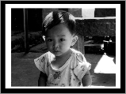
Original
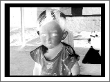
Inverted correctly
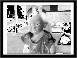
Inverted incorrectly
Figure 1 Grayscale Image Inverted Correctly and Incorrectly
Most printer drivers today have been updated to return cGrafPorts when color ink is
used. The only exception to this rule that I know of is the ImageWriter driver. Because
all Apple ImageWriter drivers through version 7.0 return a grafPort, we can't rely
on Color QuickDraw calls and structures to give us accurate color images when we have
a color ribbon installed. We can draw only eight colors into a grafPort (traditionally
called "the original QuickDraw colors").
Printing on the ImageWriter with DrawPicture works perfectly well as long as our
picture is made up of original QuickDraw objects (those that appear inInside
MacintoshVolume I), each preceded by a call to ForeColor to set the foreground color to
one of the eight original QuickDraw colors. For example, the following code will print
correctly on an ImageWriter with a color ribbon, whether it's simply sent to the
printer port or enclosed in a PicHandle that's then printed with DrawPicture:
SetRect(&bounds, 20, 20, 120, 120);
// Initial object bounds (a square).
BackColor(whiteColor); // Set background color to white.
ForeColor(cyanColor); // Set foreground color to cyan.
FillRect(&bounds, gray); // Fill square with 50% cyan pattern.
OffsetRect(&bounds, 70, 70); // Move down a bit.
ForeColor(blackColor); // Select black.
FrameRect(&bounds); // Draw a black square frame.
ForeColor(cyanColor); // Select cyan.
PaintOval(&bounds); // Draw a cyan circle in the frame.
The result is shown in Figure 2. Without the calls to ForeColor, our picture would be
recorded using our current foreground color for all objects. This is usually black and
would cause everything to print as black. If we need to print Color QuickDraw objects
on an ImageWriter with a color ribbon, we must first convert them to original
QuickDraw objects. In the case of pixMaps, we convert all of the pixMap's colors to the
eight original QuickDraw colors and make a bitmap separation of the image for each
color. The Color ImageWriter Adventures sample demonstrates how to do this.
CONVERTING TO THE ORIGINAL QUICKDRAW COLORS
First, possibly through banding, we use CopyBits to ditherCopy the source picture into
a 4-bit GWorld whose color table is made up of the eight original colors. We obtain
this color table by passing a value of 127 to GetCTable, as explained inInside
MacintoshVolume V, page 81.
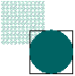
Figure 2 Product of Drawing With a Sequence of Calls to ForeColor
If we don't use ditherCopy, the resulting output will have colors determined by
threshold comparison. In other words, every color in the original will simply be
mapped to one of the eight original QuickDraw colors. This method will make scanned
images look fake or "painted," which is not what we're looking for. In most cases, we'd
rather have a dithered image that approximates more than eight colors by putting
different colors side by side. Since we're printing only eight real colors, dithering is a
necessity when using this method. For the curious, the Color ImageWriter Adventures
sample allows you to turn dithering off for comparison.
MAKING THE SEPARATIONS
Once our image has been copied to the 4-bit "original color" GWorld, we can start
making our separations. We need a Color QuickDraw searchProc that returns the
position indicator for black or white, depending on whether or not the color passed
matches the color we're looking for. If it does, the routine returns black. Since we'll
be copying to a bitmap (in which a 0 pixel value indicates the background color and a 1
pixel value indicates the foreground color), this is all the code it takes:
pascal Boolean OQDSearch(RGBColor *anRGB, long *position)
{
*position = 0; // Initially assume no color.
if ((anRGB->red == (*gOrgQDCTab)->ctTable[gCurColor].rgb.red) &&
(anRGB->green ==
(*gOrgQDCTab)->ctTable[gCurColor].rgb.green) &&
(anRGB->blue ==
(*gOrgQDCTab)->ctTable[gCurColor].rgb.blue))
*position = 1; // Color it.
return true; // To indicate that we've handled the
// color processing.
}
We'll make seven separations (one for each of the eight original QuickDraw colors
except white). The code that follows is adapted from the Color ImageWriter
Adventures sample and stores the different separations in a picture that uses only
original QuickDraw primitives, so it can be sent with DrawPicture to the ImageWriter
driver's grafPort with great results.
The process goes like this: Once we have the dithered image in our 4-bit GWorld, we
create a 1-bit GWorld using exactly the same dimensions. We'll use this 1-bit GWorld
to create our bitmap representations of each color separation. After setting the
current GWorld to our 1-bit GWorld,colorSep, we call OpenPicture. This is critical
because OpenPicture and OpenCPicture tie each open picture to the current port.
(That's why you can have multiple pictures open at once as long as they're in different
ports.) If we change ports, we can draw all we want and the calls will not be recorded
into our picture. Only when we make the colorSep GWorld the current one will this
picture's recording be enabled. Very cool.
PicHandle SeparateColors(PicHandle wPICT, Fixed scaleAmt,
Boolean useDither)
{
QDErr err;
GWorldPtr savedGW;
GDHandle savedGDH;
PicHandle sepsPICT = nil;
Rect pictFrame;
GWorldPtr OQDGWorld = nil;
PixMapHandle srcPix, destPix;
GWorldPtr colorSep = nil;
short QDColor[7] =
{blackColor, yellowColor, magentaColor,
redColor, cyanColor, greenColor, blueColor};
// Save the current GWorld and GDevice.
GetGWorld(&savedGW, &savedGDH);
// Set our global color table to the eight original QuickDraw colors
// and get the picture's frame.
gOrgQDCTab = GetCTable(127);
pictFrame = (*wPICT)->picFrame;
// Create a 4-bit GWorld that uses the eight original QuickDraw
// colors. If there are no errors, band the picture, using ditherCopy
// if desired and scaling the amount we need to. The result is a
// representation of the image in the eight original colors.
err = NewGWorld(&OQDGWorld, 4, &pictFrame, gOrgQDCTab,
nil, 0);
if (!err)
err = BandPicture(wPICT, OQDGWorld, scaleAmt, useDither);
// Create a new 1-bit GWorld for the separations.
if (!err)
{
err = NewGWorld(&colorSep, 1, &pictFrame, nil, nil, 0);
// Set the current GWorld to the 1-bit GWorld and create a picture.
// Note that this means that the picture is tied to the 1-bit GWorld.
// Only when that GWorld is current will data be recorded into the
// picture.
if (!err)
{
SetGWorld(colorSep, nil);
srcPix = GetGWorldPixMap(OQDGWorld);
LockPixels(srcPix);
destPix = GetGWorldPixMap(colorSep);
LockPixels(destPix);
ClipRect(&pictFrame);
sepsPICT = OpenPicture(&pictFrame);
With the picture opened, the separations can be made. We go through each of the eight
original colors (except white) and create a separation for that color. To do this, we set
the current GWorld to one that's different from our picture's GWorld (to turn off
recording). Next we install our searchProc and we CopyBits from the 4-bit GWorld to
the 1-bit one. This gives us black bits only where the color in the original matches the
current separation color. Then we delete the searchProc and set our current GWorld
back to the 1-bit one. This reenables recording into our picture, and we record the
foreground color for the current separation, followed by the separation's bitmap using
srcOr mode. After all seven passes have been completed, we will get a picture with
seven separations in it, overlaying each other to make the composite, which will differ
slightly from the original because we lose some information to dithering. (See Figure
3.) We use srcOr mode so that the white is transparent; otherwise the white for each
layer would overwrite the color from the previous layer.
for (gCurColor = 0; (gCurColor < 7) && !err;
gCurColor++)
{
SetGWorld(savedGW, savedGDH);
AddSearch(OQDSearch);
CopyBits((BitMap *) *srcPix, (BitMap *) *destPix,
&pictFrame, &pictFrame, srcCopy, nil);
DelSearch(OQDSearch);
SetGWorld(colorSep, nil);
ForeColor(QDColor[gCurColor]);
CopyBits((BitMap *) *destPix,
(BitMap *) *destPix, &pictFrame,
&pictFrame, srcOr, nil);
}
// Close the picture, restore our saved GWorld/GDevice, and dispose of
our
// GWorlds and the global color table. Finally, return the picture we
// created.
ClosePicture();
SetGWorld(savedGW, savedGDH);
UnlockPixels(srcPix);
UnlockPixels(destPix);
}
}
if (gOrgQDCTab) DisposeCTable(gOrgQDCTab);
if (OQDGWorld) DisposeGWorld(OQDGWorld);
if (colorSep) DisposeGWorld(colorSep);
return sepsPICT;
}
After the seventh separation is made, we can jump into our print loop and print the
image with DrawPicture. The result is a nicely dithered color image. For best results,
we'd use PrGeneral to set the printer grafPort's resolution higher than 72 dpi. In the
case of a printer such as the ImageWriter, though, this has a tremendous performance
hit. Here's another good opportunity to provide some user interaction and let the user
decide what to do, via a preferences setting or by adding an item to the print job dialog.
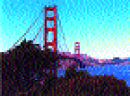
Original
greenColor
yellowColor
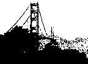
blackColor
redColor
magentaColor
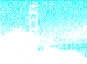
cyanColor
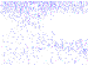
blueColor
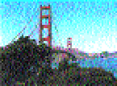
Composite
Figure 3 Seven Separations Created With Original QuickDraw for a Color Image
GOTCHAS
This method of printing a picture to an ImageWriter with a color ribbon will achieve
great results without doing anything special. However, there are two gotchas with it.
First, if you generate an image at a high resolution and export it to another
application, the printing application needs to know to call PrGeneral to boost the
printer port's resolution. However, you can export the pictures at 72 dpi, use a
picFrame that's correct for 72-dpi display of the image, or use OpenCPicture to store
the resolution in the picture. In any of those cases, DrawPicture will do the right thing
with the picture, even though the application doesn't. To see this, print out the sample
PICT called Separations Test to a color ImageWriter using TeachText. TeachText has no
special code to handle ImageWriter printing and yet it prints the PICTs generated by
this method just fine. Pictures you create this way will print to a color ImageWriter
from any application and can be pasted into word processors and such for color image
output. Pretty neat, huh?
But, unfortunately, srcOr mode doesn't necessarily print well with all printer
drivers. This means that these way-cool images may not print way-cool on printers
other than ImageWriters. This isn't a problem in the sample code because we use this
method only if we're printing on an ImageWriter. PICTs that are pasted into a
document might be printed on any printer, however, so exporting these pictures could
create more problems than it solves.
For more details on how to do the separations, see the Color ImageWriter Adventures
sample. The sample prints color pixMaps using this method and allows you to specify
high-resolution or low- resolution output. I strongly urge you to print at least one of
the sample images using the application in ditherCopy mode and specifying
high-resolution output. The results may surprise you, as they did me.
When we're printing pixMaps to a grafPort and the printer doesn't have (or the user
doesn't want to use) color capability, we need to use dithering (or more precisely, a
special kind of dithering called halftoning) to get any kind of decent output. In other
words, we need to convert pixMaps to dithered bitmaps. The Halftone Adventures
sample demonstrates three different dithering methods: the CopyBits ditherCopy
method, the "true" halftone method, and the lazy person's halftone method. Before we
look at these, a note about resolution.
SETTING RESOLUTION
When printing halftoned images, it's best to set the printer to a square resolution
(equal horizontal and vertical dpi). The reason is that when we use mixed resolutions,
our halftone matrix becomes distorted, and that can distort the printed image. This
happens because dots that should be a fixed distance apart are now closer to each other
in one direction than in the other.
We can compensate for this distortion when we create our halftone matrix, but it's
likely to be a great deal of work, which is only marginally justified. All of the halftone
routines in the sample code print using square resolutions. (They call the GetBestDPI
routine described earlier with the wantSquareDPI parameter set to true.)
THE DITHERCOPY METHOD
The ditherCopy method uses CopyBits to dither the image to a 1-bit GWorld at device
resolution and print that. If you're working with a device that has a low resolution
(prints big dots) and a relatively constant physical dot size -- such as the
ImageWriter -- then this method works fine. If, however, you're printing to a device
that has a high resolution and a variable pixel size (from device to device, or even
within the same device across time or due to variations in amount and type of toner,
humidity, and paper type), this method results in image distortion. Figure 4 was
dithered to a LaserWriter using this method, and the resulting distortion is very
noticeable.
The distortion you see in Figure 4 is due to pixel error (the difference between the
physical pixel drawn on the page and its size as the driver or rendering system models
it). Since dithering must occur at device resolution, it's hard to compensate for the
device pixel error when a dithered image is printed. Halftoning, on the other hand,
increases the size of each dot, negating the pixel error thatoccurs during printing.
Thus halftoning results in better output on devices such as the LaserWriter. This
phenomenon is discussed further in "Making the Most of Color on 1-Bit Devices"
indevelopIssue 9 and is one of the main reasons that just doing a straight dither is not
acceptable for most cases. The ditherCopy method does, however, provide a good
benchmark to judge the other methods against.
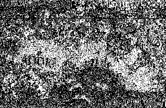
Figure 4 Distorted Sample Output From the ditherCopy Method
THE "TRUE" HALFTONE METHOD
The "true" halftone method is described in "Making the Most of Color on 1-Bit
Devices" indevelopIssue 9. You can read all about it there and try it out in the Halftone
Adventures sample. Note that the routine in the sample code uses 8 x 8 halftones, but
the algorithm described in the Issue 9 article is general and will work at any angle,
any frequency, and any resolution. Also, since the sample's routine accepts only
8-bit-deep and 32-bit-deep pixMaps, the source image is passed in as a 32-bit- deep
pixMap. When you use this sample code, an image may take one to two minutes to
render before being printed, but the code can be optimized to increase its speed. Figure
5 provides an example of the kind of output we can expect using this method.
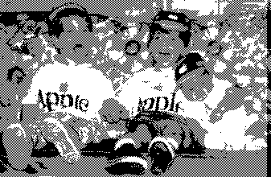
Figure 5 Sample Output From the "True" Halftone Method
THE LAZY PERSON'S HALFTONE METHOD
I came up with the lazy person's halftone method to create fast "halftone-ish" output
that looks very good and prints very fast. It works especially well on LaserWriters.
Typical images render in 12 seconds or so (before printing), and I'm sure
optimization would shorten this time. But note that this is not intended to be a general
solution like the "true" halftone method; its usefulness is restricted to halftones at one
angle, one frequency, and a square resolution.
Strictly speaking, this isn't halftone generation but rather halftone approximation
with patterns. The difference is that in "true" halftoning, a halftone matrix is
cookie-cuttered around the image, and adjacent pixels are taken into account when the
halftones are created. In this way, the appearance of strong patterns (such as vertical
stripes) can be removed. With the method I propose, the output appears to be a 0º 4 x
4 halftone, not a 45º 8 x 8 as in the Halftone Adventures implementation of the true
halftone method. While this approach doesn't generate strong patterns, the absence of a
45º halftone is somewhat noticeable on lower-resolution printers like ImageWriters
or those with drivers that don't support PrGeneral (and therefore must be used at 72
dpi).
Here's how it works: First, we dither the original image to a 4-bit grayscale GWorld,
at 1/4 the optimal printer resolution. This may mean stretching or shrinking the
original image. Next we find out how much of the printed image will fit on the paper.
We use this information to limit the amount of data we're working with to just the
pixels that will end up on paper. If the image extended 5 inches off the right edge of the
paper, for example, it would be a waste of time to process that extra 5 inches. Once we
have the dithered data and the bounds we're working with, we create a 1-bit GWorld
that's four times as big as the 4-bit one. (This also means that it's at our printer
port's resolution.) Going through the source (4-bit) image one pixel at a time, we
create the halftoned output by matching up each pixel's index value with one of the
patterns shown in Figure 6 and drawing that 4 x 4 pattern in our 1-bit GWorld.
For example, if we find a pixel has the index value of 8, the pattern with 8 dots in it is
used. With 4 x 4 patterns, we could actually create 17 unique patterns (counting the
pattern created when no dots are used). However, this wouldn't be helpful since our
image has only 16 shades of gray in it. Therefore, we ignore one, and I chose to drop
the pattern for 15. (The pattern designated 15 is really one for 16.) The reason for
using the pattern for 16 in the 15 spot is that black in our image will have a value of
15, and we want to make sure that black pixels are rendered as totally black patterns.
Otherwise, the resulting image would have no solid black in it.
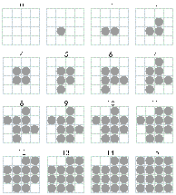
Figure 6 The Patterns Used to Approximate Halftones
Once the entire image has been halftoned, we just CopyBits it to the printer port.
Figure 7 provides an example of the kind of output we can expect using this method.
This method works especially well when we're printing at a high resolution. On the
LaserWriter at 300 dpi, for example, the 4 x 4 patterns are so small (1/75") that
they appear as a single dot. It's hard to believe that the output in Figure 7 was printed
in just black! As you can see by comparing this output to the halftone output in Figure
5, there's very little difference between the two, and for speed considerations, the lazy
person's method may be a viable alternative.
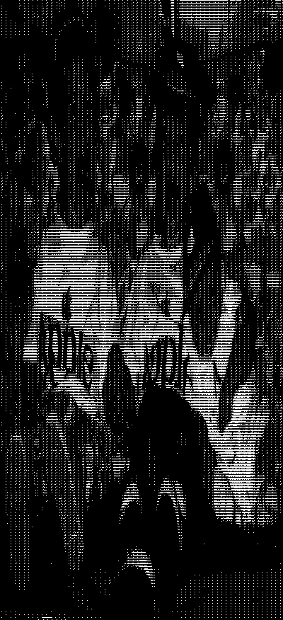
Figure 7 Sample output from the Lazy Person's Halftone Method
We now have the methods that enable us to obtain high-quality output from the whole
range of possible printing configurations when we print pixMaps. All we still need is a
way to decide which method to use at print time.
To make this decision, we need to determine only three things:
That's it! These things can be determined in ways that will be compatible now and in
the future. Let's take a quick look at the questions and how to determine their
answers.
DO WE HAVE A CGRAFPORT OR A GRAFPORT?
We can determine whether we have a cGrafPort or a grafPort by checking the
rowBytes value in the port returned by PrOpenDoc. If it's negative (the high bit is
set), we have a cGrafPort. Otherwise, we have a grafPort. In C this reads:
Boolean HaveColorPrPort(THPrint hPrint, OSErr *anErr)
{
Boolean haveCGrafPort = false;
TPPrPort dummyPort;
TPrStatus statusRec;
if (hPrint)
{
// Open a document and check for errors.
dummyPort = PrOpenDoc(hPrint, nil, nil);
*anErr = PrError();
// If no errors, check the port's rowBytes value.
if (*anErr == noErr)
{
haveCGrafPort = (dummyPort->gPort.portBits.rowBytes < 0);
// We don't want to print yet, so kill the job by setting an
// error. Clean up by closing the document and calling
// PrPicFile to delete any spool file we may have created.
// Finally, clear the error we set.
PrSetError(iPrAbort);
PrCloseDoc(dummyPort);
if ((*hPrint)->prJob.bjDocLoop == bSpoolLoop)
PrPicFile(hPrint, dummyPort, nil, nil, &statusRec);
PrSetError(noErr);
}
}
else
*anErr = nilHandleErr;
return haveCGrafPort;
}
The routine calls PrOpenDoc, checks the value of the returned port's rowBytes
(negative means cGrafPort), and then posts an error to halt printing and calls
PrCloseDoc. Finally, it calls PrPicFile to delete any spool file that may have been
generated, clears the error it set, and returns true or false depending on whether or
not the port we looked at was a cGrafPort. It's not glamorous, but it works.
If as a result of this inquiry we find that we have a cGrafPort, we give the go-ahead to
printing with Color QuickDraw calls. If not, we go on to the next question.
IF A GRAFPORT, IS THIS AN IMAGEWRITER?
We can find out if we're talking to the ImageWriter driver by getting the high byte of a
validated print record's prStl.wDev field. If the high byte is 1 or 5, we're using the
ImageWriter or the ImageWriter LQ driver. In C:
#define IW_wdevID 1
#define IWLQ_wdevID 5
unsigned char devID;
devID = (*hPrint)->prStl.wDev >>8;
if ((devID == IW_wdevID) || (devID == IWLQ_wdevID))
/* Then we have an ImageWriter. */;
This method is described in the Macintosh Technical Note "Optimizing for the
LaserWriter -- Techniques" and is strongly discouraged there. So why am I suggesting
that you use it? Well, unfortunately, there's no other reliable way to do this. In fact,
checking the wDev has begrudgingly become an acceptable thing; developers have
become so used to this method that we'd need to give ample warning before breaking it.
However, you should expect that one of these days, checking wDevs will not be
supported anymore. As soon as Apple provides a better method, you should jump on the
code conversion bandwagon and replace all your wDev-snooping code.
It's important to make this checkafterthe cGrafPort check because there are
third-party printer drivers for the ImageWriter that support 8-bit color through
cGrafPorts. If we first check for an ImageWriter and then jump to the ImageWriter
grafPort printing code, we may be sacrificing output quality, since we may have been
able to print using the Color QuickDraw methods described for cGrafPorts.
Anyway, if we find that we have an ImageWriter, we go on to the next question.
Otherwise, we assume we have a monochrome printer and we accordingly launch the
halftoning routine for printing.
IF AN IMAGEWRITER, IS A COLOR RIBBON INSTALLED?
In the case of the ImageWriter, we have two options for determining whether a color
ribbon is installed: we can either ask the printer or ask the user.
To ask the printer, we would go through the serial driver if the ImageWriter were
connected to a serial port or through AppleTalk Printer Access Protocol (PAP) if the
printer were an AppleTalk ImageWriter. But this approach has a few problems. First,
even if the user has a color ribbon, he may not want to use it. He may be printing
rough copies of his work and want to save the color ink until he's ready to make a final
copy. Or he may know that his color ribbon is worn out and prints well only in black. A
second problem is that the printer must be turned on and selected when we query it, or
we'll hang until we time out. The delay is likely to thoroughly annoy our users.
Third, there's a problem with ImageWriter I support: the "ESC ?" query sequence
(see theImageWriter Technical Reference Manual) that's used to ask a serial
ImageWriter if it has a color ribbon is not supported by the ImageWriter I. This
means our query routine will hang until it times out, and we still won't know whether
the printer has a color ribbon. A final and more compelling argument against
performing the color ribbon query is that the methods that work today are unlikely to
work under QuickDraw GX. Whether or not you decide to take advantage of QuickDraw
GX's abilities, you should avoid implementing code that will make your application
incompatible with it.
So we're left with the option of asking the user. The easiest way to do this is through a
preferences setting. A slightly more coding-intensive but preferred approach is to add
controls to the print job dialog. This might be a checkbox that simply says "Print in
color," a pop-up menu that offers color or black and white (as in the Apple IIGS
ImageWriter driver version 4.0), or, as I chose in the Final Adventure sample code,
radio buttons for color or halftone output.
Even with this method, there are a few problems. If we add the control to every
printer driver's job dialog, it will appear even when printers return cGrafPorts, in
which case we'll want to ignore the setting. Also, if a checkbox is added to a driver like
the 7.0 LaserWriter driver, the user will see redundant settings: a set of radio buttons
for Color/Grayscale versus Black & White printing, and another checkbox for "Print
in color." The way to get around this problem is to add the output controls only when
the ImageWriter or ImageWriter LQ driver is being used, something we've already
discussed how to determine. If we implement this solution, we'll want to store the last
selected value for the control and default to it whenever the dialog is displayed. That
will spare users from possibly having to click an extra button every time they print.
However, if they change ImageWriters between print jobs, the saved flag may be
incorrect for the new printer. This is a minor glitch that will become apparent the
next time they print.
The bottom line here is that if we determine that our application is dealing with an
ImageWriter with a color ribbon installed, we print using the eight original colors.
Otherwise, we use our halftoning routine and print in black.
PUTTING IT ALL TOGETHER
To see how this decision process translates into code, take a look at the DoPrint routine
in the Final Adventure sample on the CD. That sample rolls together into one neat
package all the methods we've discussed in this article. Study it and give it a try to see
how it works.
In this article, we've looked at the problems associated with color printing under the
current printing architecture. We've seen that there's a real need for application
developers to provide color printing support in their applications. We've also looked at
techniques for printing high-quality representations of pictures containing pixMaps.
These techniques consist of banding images through GWorlds for color-capable
printers and drivers, creating color separations for printing on ImageWriters with
color ribbons, and creating dithered halftones for black-and-white output.
I mentioned that these techniques aren't intended for printing pictures that contain
text, because when text is converted to pixMaps, all of the font information is lost, and
the result is chunky, poor- quality text that's hard to read. You should always draw
text separately from bitmaps or pixMaps, if at all possible. One way to do this is to
write a routine to split a picture into two pictures: one with pixMaps, bitmaps, and
foreground colors, and the other with everything except pixMaps and bitmaps (we'd
want foreground colors in both). Once you have the two pictures, you can render the
first using the methods discussed in this article and the second with DrawPicture. The
order is important if we want the text to appear on top of the pixMap data. Remember
to scale both pictures to the grafPort's or cGrafPort's resolution during printing.
As more technologies make use of color on the Macintosh, and more scanners and jumbo
color monitors are shipped, users are going to need a way to get realistic hard copies of
their screen displays. And although the color capabilities of Apple drivers and printers
will continue to improve in both the short and long term (through such technologies as
QuickDraw GX, ColorSync, and new printer drivers), interim solutions such as the
ones proposed here will be needed for some time to come.
THE STORY BEHIND COLOR QUICKDRAW SUPPORTSo why is it that the
LaserWriter didn't support cGrafPorts until the 6.0 LaserWriter driver? And why is
it that the 7.0 ImageWriter driver still doesn't support cGrafPort printing?
The first answer is simple. Color QuickDraw didn't exist when the LaserWriter driver
was created back in 1985. It wasn't until 32-Bit QuickDraw came on the scene that
the driver was revised to support color/grayscale printing. Since the driver wasn't
originally designed with Color QuickDraw in mind, this support represented major
changes to the source code. As such, it took until version 6.0.2 for most of the glitches
to be worked out. Even today, the LaserWriter driver is essentially an old-style
QuickDraw driver with Color QuickDraw support patched in.
The ImageWriter driver never was revised, except to add color tables to the print job
dialogs in the 6.1 version. Why wasn't the driver revised? Well, for the ImageWriter
driver to fully support Color QuickDraw, it would essentially need to be rewritten.
Since there's been no overwhelming demand and since color printing solutions are
available via the color LaserWriter driver and third-party printers and drivers, no
one has rewritten the driver to provide color support.
At some point in the future, all of Apple's printer drivers will support Color
QuickDraw calls. But for now, applications should be aware that a printer driver
returns either a cGrafPort or a grafPort, and it's the application's responsibility to
"do the right thing" regardless of the port type.
DAVE HERSEY is a member of the Printing, Imaging, and Graphics (PIGs) group in
Apple Developer Technical Support. Before leaving his boyhood home of Newport,
Rhode Island, more than two years ago, Dave churned out code for a number of different
software developers, writing applications that ranged from a popular accounting
package to flatbed scanner software. When he's not absorbing radiation in front of his
computer, Dave enjoys vacationing at the family summer camp in Wayne, Maine (no
kidding), watching CNN on his 35-inch television ("It's still not big enough"), and
playing Duplos with his nephews. Even with such a busy agenda, Dave still finds time
to torment his peers with occasional practical (and impractical) jokes, in true DTS
style.*
The LaserWriter's physical resolution is 300 dpi but printer drivers on the
Macintosh return a 72-dpi port by default, because 72 dpi is the native resolution of
QuickDraw. It's important to realize that unless you explicitly set the port's
resolution to 300 dpi, you're working in a 72-dpi port and the effective resolution is
cut by more than three quarters. *
The original QuickDraw colors and their predefined constants are listed on page
158 of Inside Macintosh Volume I.*
Color QuickDraw searchProcs are discussed in Inside Macintosh Volume V, pages
145-147.*
Adding controls to the print job dialog is described in the Macintosh Technical
Note "How to Add Items to the Print Dialogs" and illustrated by PDlog Expand in the
Snippets folder on the Developer CD Series disc.*
THANKS TO OUR TECHNICAL REVIEWERS Pete ("Luke") Alexander, Hugo Ayala,
Dan Lipton, Konstantin Othmer, Sean Parent*